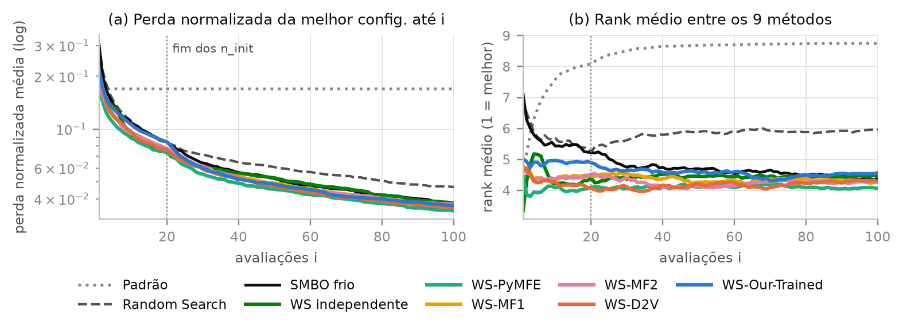
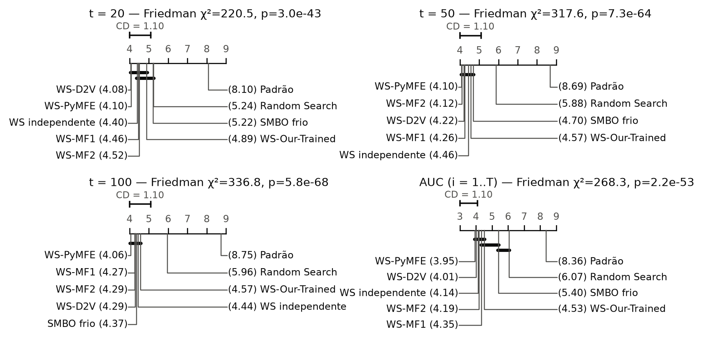
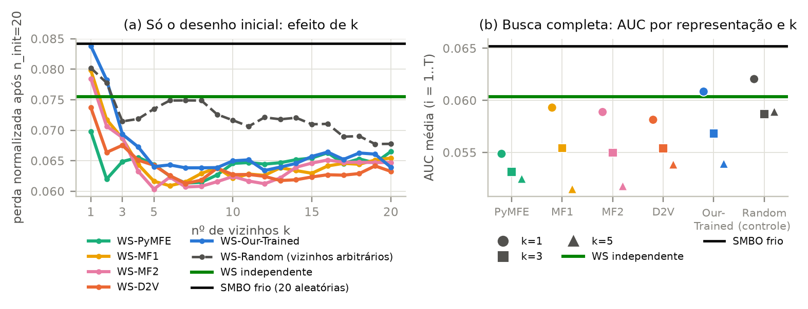
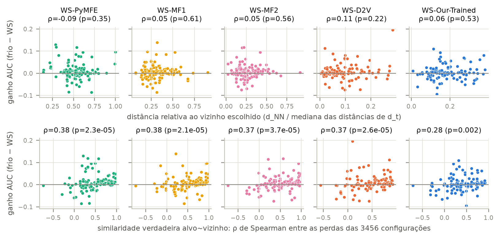

Johnattan D. F. Viana (jdfv@cin.ufpe.br)
Código, notebooks executados e matriz de perdas: github.com/johnattandouglas/DisciplinaMtL/tree/main/entrega3
Problema e datasets. Trocamos o problema das Atividades 1 e 2 pela meta-task de warm-start de HPO do paper do Dataset2Vec (D2V) [Jomaa et al. 2021, §6.3], que é a tarefa em que a pesquisa avalia representações de datasets. São 120 datasets de classificação do UCI — a coleção pré-processada de Fernández-Delgado et al. (2014), a mesma de onde vieram os 30 datasets da Atividade 1 —, com 16 a 130.064 instâncias (mediana 687), 3 a 262 atributos e 2 a 100 classes. A pergunta passa a ser com qual configuração começar a busca de um algoritmo já escolhido.
Algoritmo e espaço Θ. O algoritmo base é uma rede feed-forward (MLP) treinada por 50 épocas — o algoritmo da
meta-task do D2V e um dos candidatos da Atividade 2. Θ tem 7 hiperparâmetros: ativação {ReLU, Leaky ReLU, SeLU}, forma da
arquitetura {ASC, DES, ENC, SQU, SYM}, dropout {0; 0,2; 0,5}, camadas {1, 3, 5, 7}, neurônios {4, 8, 16, 32}, batch-norm {não,
sim} e otimizador {Adam, RMSProp, SGD}. As K = 3456 configurações são o grid completo (com 1 camada só existe a
forma SQU, por isso não são 4320). A grade se justifica por ser o fatorial completo do meta-dataset: a matriz fica completa, sem
imputação, e L* é exato. A configuração padrão é o ponto do grid mais próximo do default do MLPClassifier do
scikit-learn (1 camada de 100 neurônios, ReLU, Adam, sem dropout/batch-norm): ReLU, SQU, dropout 0, 1 camada de 32 neurônios (a
maior largura do grid), sem batch-norm, Adam.
Protocolo e custo. Todas as K × n células seguem o mesmo protocolo: a configuração é treinada na partição de treino do
dataset e avaliada no hold-out de validação fixo do meta-dataset; perda = 1 − acurácia de validação na época 50. A matriz
K × n = 3456 × 120 (results/matriz_de_perdas.csv) equivale a 414.720 treinos de 50 épocas, pré-computados
pelos autores do meta-dataset; nosso custo foi baixar ~1 GB e canonizar o grid (cada arquivo traz as configurações em
outra ordem, e alguns repetem configurações). Usamos T = 100 avaliações por busca (K = 3456 ≫ 3T = 300) e ninit
= 20 pontos iniciais (o protocolo do D2V), com 5 sementes por (método, alvo). A matriz tem pouca resolução no topo: a
mediana é de 44 valores distintos de perda por dataset (partições de validação pequenas) e em 18 datasets ≥ 1% das
configurações empatam no ótimo — empates que desfazemos por sorteio com a semente.
Para cada alvo dt (leave-one-dataset-out), avaliar uma configuração é ler a célula de dt; todo o meta-conhecimento (vizinhos, ranks médios, normalização das meta-características) vem só dos outros 119. Comparamos: (1) Padrão; (2) Random Search sem reposição; (3) SMBO frio, 20 configurações aleatórias + SMBO; (4) WS-⟨rep⟩, cujos 20 pontos iniciais vêm dos k datasets mais próximos de dt no espaço ⟨rep⟩, em rodízio (a melhor configuração de cada vizinho, depois a 2ª melhor de cada um, …; com k = 1 são as 20 melhores do vizinho mais próximo, como no D2V, e com k ≥ 20 seria exatamente Feurer et al. (2014)); e (5) WS independente, as 20 configurações de melhor rank médio nos 119 datasets de treino. Os métodos 3–5 usam o mesmo SMBO: GP com kernel Matérn 3/2 e ARD (hiperparâmetros reotimizados a cada iteração) sobre a codificação one-hot das configurações e Expected Improvement sobre as configurações ainda não avaliadas. A comparação principal usa k = 1, fixado a priori; k ∈ {1, 3, 5} entra na Análise 2, junto com um controle extra, WS-Random: o método 4 com uma representação aleatória (32 dims ~ U(−1, 1)), isto é, k datasets arbitrários no lugar dos mais similares.
Meta-características. Clássicas: PyMFE (MFE() padrão [Alcobaça et al. 2020]; 102
colunas após a limpeza),
MF1 (Wistuba et al. 2016; 28) e MF2 (Feurer et al. 2015; 22). Aprendidas: D2V (32 dims) e a nossa
Our-Trained (1024 dims): um encoder de atenção invariante a permutações sobre o dataset bruto → MLP → z, treinado com
entropia cruzada para prever, para cada um dos 7 hiperparâmetros, a distribuição de valores entre as 20 melhores configurações do
dataset — um alvo específico desta meta-task. D2V e Our-Trained têm um extrator por split oficial do D2V (80/16/24 datasets de
treino/validação/teste); o alvo usa o extrator do split em que ele é de teste, que nunca o viu. Para cada alvo, descarte de
colunas com NaN, imputação e min-max são ajustados nos outros 119; a distância é euclidiana.
Métricas. Perda normalizada da melhor configuração até a avaliação i, (L − L*)/(Lpior − L*) por dataset, média sobre sementes e datasets (o ADTM do D2V); AUC = média dessa curva em i = 1..T; rank médio entre métodos (a outra métrica do D2V). Testes: Friedman com diferença crítica de Nemenyi [Demšar 2006] (α = 0,05; N = 120 datasets como blocos, sementes agregadas pela média) e Wilcoxon pareado com correção de Holm para os pares de interesse.

Tabela 1. Perda normalizada média logo após os pontos iniciais (t = 20), em um orçamento intermediário (t = 50) e em T = 100; AUC = média da curva em i = 1..100; rank médio da AUC entre os 9 métodos. Menor = melhor; † = melhor que o SMBO frio (Wilcoxon pareado, Holm, α = 0,05).
| Método | t = 20 | t = 50 | t = 100 | AUC | rank (AUC) |
|---|---|---|---|---|---|
| WS-PyMFE | 0,073 † | 0,045 | 0,034 | 0,055 † | 3,95 |
| WS-D2V | 0,076 † | 0,048 | 0,035 | 0,058 | 4,01 |
| WS-MF2 | 0,077 | 0,047 | 0,037 | 0,059 | 4,19 |
| WS-MF1 | 0,077 | 0,049 | 0,036 | 0,059 | 4,35 |
| WS-Our-Trained | 0,085 | 0,048 | 0,037 | 0,061 | 4,53 |
| WS independente (método 5) | 0,076 | 0,053 | 0,038 | 0,060 | 4,14 |
| SMBO frio (método 3) | 0,084 | 0,052 | 0,038 | 0,065 | 5,40 |
| Random Search (método 2) | 0,083 | 0,061 | 0,047 | 0,072 | 6,07 |
| Padrão (método 1) | 0,170 | 0,170 | 0,170 | 0,170 | 8,36 |

O teste de Friedman rejeita a igualdade em todos os orçamentos (χ² = 220,5 em t = 20 até 336,8 em t = 100; p < 10−42), mas boa parte disso vem do Padrão e do Random Search. Entre os SMBO, o quadro muda com o orçamento. Logo após os pontos iniciais (t = 20), os warm-starts por WS-D2V e WS-PyMFE ficam a mais de uma CD do SMBO frio e do Random Search, e também vencem o SMBO frio no Wilcoxon-Holm (p = 0,04 e 0,03); a perda média cai de 0,084 para 0,073–0,076. Em t = 50 nenhum par de SMBO difere após a correção de Holm, e em T = 100 todos os SMBO formam um único grupo (perdas de 0,034 a 0,038, pHolm ≥ 0,46). Na AUC, que integra a curva, todos os warm-starts por similaridade, exceto Our-Trained e MF1, ficam a mais de uma CD do SMBO frio, mas só o WS-PyMFE passa no Wilcoxon-Holm (p = 0,002). O rank médio por avaliação (Fig. 1b) mostra a mesma coisa: os warm-starts lideram desde a 1ª avaliação e o SMBO frio alcança o grupo perto de i = 80. O warm-start ajuda no começo; a vantagem não persiste até T — o GP com EI recupera o atraso em ~60 avaliações. O WS-Our-Trained é a exceção: em t = 20 ele não difere do SMBO frio (0,085 × 0,084).
Tabela 2. Warm-start por similaridade (método 4) com k vizinhos, comparado ao WS independente (método 5, t = 20: 0,076; AUC: 0,060) e ao controle WS-Random, que usa k datasets arbitrários. * = melhor que o WS independente (Wilcoxon-Holm sobre 18 comparações); ‡ = melhor que o WS-Random com o mesmo k (Wilcoxon-Holm sobre 30 comparações); α = 0,05.
| Representação | perda em t = 20 | AUC (i = 1..100) | ||||
|---|---|---|---|---|---|---|
| k = 1 | k = 3 | k = 5 | k = 1 | k = 3 | k = 5 | |
| PyMFE (clássica) | 0,073 | 0,064 | 0,064 | 0,055 | 0,053 | 0,052 ‡ |
| MF1 (clássica) | 0,077 | 0,067 | 0,060 * | 0,059 | 0,055 | 0,051 ‡ |
| MF2 (clássica) | 0,077 | 0,067 | 0,062 ‡ | 0,059 | 0,055 | 0,052 ‡ |
| D2V (aprendida) | 0,076 | 0,067 | 0,063 | 0,058 | 0,055 | 0,054 |
| Our-Trained (aprendida) | 0,085 | 0,069 | 0,063 | 0,061 | 0,057 | 0,054 |
| Random (controle) | 0,082 | 0,072 | 0,071 | 0,062 | 0,059 | 0,059 |

Método 4 × método 5. Com k = 1, nenhum warm-start por similaridade difere do WS independente em orçamento algum (pHolm ≥ 0,76 na AUC); o melhor deles, PyMFE, vence o controle em 65 alvos e perde em 54. Clássicas × aprendidas: a AUC média das aprendidas (0,0595) não difere da das clássicas (0,0577; Wilcoxon p = 0,34). O vizinho escolhido é pouco melhor que um dataset qualquer: na matriz M[i, j] (perda em i usando as 20 melhores configurações de j), ele fica no percentil 42 (PyMFE), 44 (D2V), 48 (MF1, MF2) e 52 (Our-Trained) dos 119 candidatos, contra 50 de um vizinho aleatório e uma perda de 0,008 do melhor vizinho possível (oráculo) — há muito a ganhar com um vizinho certo, e as meta-características quase não o encontram. Só o D2V tem distância correlacionada com a utilidade do vizinho (ρ médio = 0,06, p = 0,0002), e mesmo assim fracamente — a representação aleatória chega a ρ = 0,02 (p = 0,03); nas demais ρ ≈ 0. As representações também quase nunca concordam: escolhem o mesmo vizinho em 2–22% dos alvos (MF1 e MF2, 65%).
Efeito de k. Aumentar k ajuda todas as representações: em t = 20 a perda cai de 0,073–0,085 (k = 1) para 0,060–0,064 (k = 5), e o WS-MF1 com k = 5 passa a vencer o WS independente (pHolm = 0,01). A Fig. 3a mostra que, a partir de k ≈ 5, as curvas de todas as representações se sobrepõem em 0,060–0,065 — abaixo do controle com vizinhos arbitrários, que estaciona em 0,068–0,075. Há, portanto, dois efeitos. (i) Agregar as melhores configurações de vários datasets já ajuda por si: na busca completa, o WS-Random cai de 0,082 (k = 1) para 0,071 (k = 5) em t = 20, nominalmente abaixo do WS independente. (ii) Escolher esses datasets por similaridade acrescenta um ganho que só aparece com k = 5: as três clássicas vencem o WS-Random na AUC (PyMFE, MF1 e MF2: pHolm = 0,013, 0,015 e 0,004; melhores em 74–77 dos 120 alvos) e o MF2 também em t = 20 (pHolm = 0,02); D2V (0,16) e Our-Trained (0,54) não. Com k = 1 ou 3, nenhuma representação supera vizinhos arbitrários (pHolm ≥ 0,49). A similaridade orienta a escolha, mas fracamente: um único vizinho é ruidoso demais, e o sinal só aparece ao agregar alguns vizinhos — e só com as meta-características clássicas.

O warm-start (k = 1) é melhor que partir do zero em 76–82 dos 120 alvos e pior em 38–44, conforme a representação. O ganho não se relaciona com a distância ao vizinho em nenhuma representação: ρ de Spearman entre ganho e distância relativa de −0,09 (PyMFE) a 0,11 (D2V), todos com p ≥ 0,22 (o mesmo com a distância absoluta). Estar "perto" no espaço de meta-características não indica que o vizinho é útil. O que explica o ganho é a similaridade verdadeira entre as paisagens de perda do alvo e do vizinho (ρ = 0,28–0,38 com o ganho, Fig. 4 embaixo): nos alvos em que o warm-start perdeu, a mediana dessa similaridade é 0,22–0,35, contra 0,60–0,72 nos alvos em que ganhou (Mann-Whitney, p ≤ 6×10−5), e os 20 pontos herdados deixam o alvo com perda 0,10–0,12, contra 0,02–0,03. Exemplos: o Our-Trained manda cardiotocography-3clases para bank (ρ = −0,32, quando havia um vizinho com ρ = 0,92) e wine-quality-white para post-operative (ρ = −0,05; melhor possível 0,81); o D2V manda breast-cancer-wisc-prog para oocytes_merluccius_nucleus_4d (ρ = −0,24). A falha depende mais do alvo do que da representação: os ganhos das cinco representações se correlacionam (ρ = 0,27–0,67), e em 10 alvos todas perdem para o SMBO frio — lung-cancer, post-operative, heart-switzerland, echocardiogram, parkinsons, contrac, monks-1, mammographic, pittsburg-bridges-MATERIAL e vertebral-column-2clases. São, em geral, datasets pequenos (32 a 1.473 instâncias; os alvos em que o warm-start falha são menores que aqueles em que ele ganha, p ≤ 0,004 para D2V e MF1): com poucas instâncias de validação a perda é ruidosa e de baixa resolução, a paisagem de um dataset pouco diz sobre a de outro e, quando muitas configurações empatam no ótimo (9% em lung-cancer), 20 pontos aleatórios já bastam.
O warm-start acelerou a busca? Sim, mas só no começo. Os 20 pontos herdados reduzem a perda em t = 20 em até 13% em relação ao SMBO frio (significativo para PyMFE e D2V) e a vantagem diminui depois: em t = 50 já não é significativa e em T = 100 todos os SMBO empatam. Ele ajuda em cerca de 2/3 dos alvos — naqueles cuja paisagem de perda se parece com a de algum dataset de treino — e atrapalha nos datasets pequenos e ruidosos, em que o vizinho transfere configurações que só eram boas para ele.
O ganho vem das meta-características ou do portfólio? Principalmente do portfólio. No protocolo do D2V (k = 1), o warm-start por similaridade não supera nem o WS independente nem vizinhos arbitrários: o ganho sobre a partida fria vem de começar por configurações que são boas em algum dataset, não de achar o dataset certo — o vizinho escolhido fica perto do percentil 50 dos candidatos, enquanto o oráculo mostra que o vizinho certo levaria a perda inicial de 0,08 a 0,008. O sinal das meta-características existe, mas é pequeno e só aparece com k = 5 e com as clássicas: perto do efeito de agregar (0,082 → 0,071 com vizinhos arbitrários), escolhê-los por similaridade acrescenta 0,071 → 0,060–0,064 em t = 20. As aprendidas não superaram as clássicas (p = 0,34). O próprio controle do método 5 é um portfólio fraco: o rank médio escolhe configurações boas "na média" e parecidas entre si, e fica, nominalmente, atrás das melhores configurações de 5 datasets arbitrários; um portfólio guloso, que minimiza a perda do melhor ponto do conjunto, seria um controle mais exigente.
O que a restrição às K configurações pode ter escondido. A busca simulada torna o experimento possível — 13.200 buscas (22 variantes × 120 alvos × 5 sementes) custaram 26,7 h de CPU (2,5 h em 11 núcleos), contra o equivalente a ~1,3 milhão de treinos reais —, mas tem preço. (i) L* é o ótimo do grid: taxa de aprendizado, tamanho do lote e número de épocas estão fixos, então não sabemos quanto o grid deixa de fora nem se o warm-start ajudaria num espaço contínuo, onde as configurações de um vizinho não existem exatamente no alvo e teriam de ser mapeadas. (ii) Transferir configurações idênticas é o caso mais favorável ao warm-start; com GP sobre um espaço contínuo, o desenho inicial pesaria menos. (iii) O custo é contado em avaliações, não em tempo: uma rede de 7 camadas custa mais que uma de 1, e o warm-start pode herdar configurações caras. (iv) A resposta é de baixa resolução (mediana de 44 valores distintos de perda por dataset) e o ótimo de validação nem sempre é o de teste: escolhê-lo custa, em mediana, 4,3 p.p. de acurácia de teste em relação ao ótimo de teste (ρ validação~teste = 0,72) — parte das "melhores configurações" transferidas é ruído de um hold-out pequeno.
O que levo para a pesquisa. (1) A Our-Trained de 1024 dimensões foi o pior warm-start, e o diagnóstico de treino explica por quê: o alvo (a distribuição dos hiperparâmetros das top-20 configurações) é previsto tão bem por uma distribuição constante quanto pelo modelo (CE de validação 1,081–1,140 contra 1,092–1,141 do prior constante), logo nada obriga z a separar datasets — a dimensão maior não compensa um objetivo que não exige similaridade. O objetivo deveria ser relacional, alinhando distâncias em z à similaridade de paisagem (o ρ que explicou as falhas) ou à matriz de transferência M. (2) Avaliar uma representação para warm-start exige os controles de portfólio e de vizinhos arbitrários; compará-la só com a partida fria atribui à representação um ganho que é do portfólio. (3) Desenhos com vários vizinhos (k = 5) são mais robustos que copiar as 20 melhores de um só dataset, como no protocolo original do D2V — e é só com eles que a similaridade se mostra útil.
Demšar, J. (2006). Statistical comparisons of classifiers over multiple data sets. JMLR, 7:1–30.
Fernández-Delgado, M., Cernadas, E., Barro, S. e Amorim, D. (2014). Do we need hundreds of classifiers to solve real world classification problems? JMLR, 15:3133–3181.
Feurer, M., Springenberg, J. T. e Hutter, F. (2014). Using meta-learning to initialize Bayesian optimization of hyperparameters. MetaSel@ECAI, 3–10.
Feurer, M., Springenberg, J. T. e Hutter, F. (2015). Initializing Bayesian hyperparameter optimization via meta-learning. AAAI, 1128–1135.
Jomaa, H. S., Schmidt-Thieme, L. e Grabocka, J. (2021). Dataset2Vec: learning dataset meta-features. Data Mining and Knowledge Discovery, 35:964–985.
Wistuba, M., Schilling, N. e Schmidt-Thieme, L. (2016). Two-stage transfer surrogate model for automatic hyperparameter optimization. ECML-PKDD, 199–214.
Alcobaça, E. et al. (2020). MFE: towards reproducible meta-feature extraction. JMLR, 21(111):1–5.